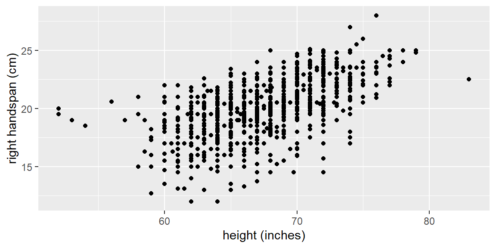
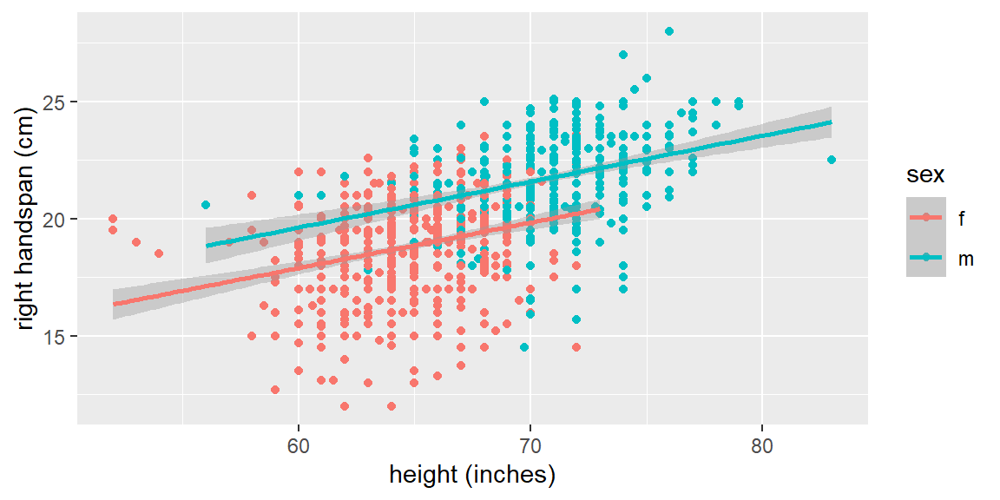

library(tidyverse)
library(tidymodels)
dat = read_csv("SurveyMeasurements.csv")
dat |> ggplot(aes(x = `height (inches)`, y = `right handspan (cm)`))+
geom_point()
“Those who ignore Statistics are condemned to reinvent it.” - Brad Efron
The independent variables that appear in a linear model can be one of two types: quantitative and qualitative (or categorical)
The different values of an independent variable used in regression are called it’s levels.
For a quantitative variable, the levels correspond to the numerical values it assumes. For example, if the number of defects in a product ranges from 0 to 3, the independent variable assumes four levels: 0, 1, 2, and 3.
The levels of a qualitative variable are not numerical. They can be defined only by describing them. Thus, they are the categories the variable can be.
Thus far, we have only considered predictor variables that are quantitative.
Qualitative predictor variables can also be used in regression models.
Let’s look at an example involving handspans and heights of students.
Example 15.1 (Handspan data) The dataset examined here consists of left and right hand spans of 1102 students along with the height, sex, handedness, and dominate eye. The response variable is right hand span with height as a predictor variable. Below is a scatterplot of the data.
library(tidyverse)
library(tidymodels)
dat = read_csv("SurveyMeasurements.csv")
dat |> ggplot(aes(x = `height (inches)`, y = `right handspan (cm)`))+
geom_point()
Let’s now take into account sex. We can color code males and females in the plot and see if there is a discernible difference. We will also fit separate simple linear regression models to each sex.
dat |>
filter(!is.na(sex)) |>
ggplot(aes(x = `height (inches)`, y = `right handspan (cm)`,
color = sex))+
geom_point()+
geom_smooth(method = "lm")
We can see that sex plays a role in the regression line. For the male subjects, the fitted line tends to be higher than for the female subjects.
We will include the qualitative variables in our model by using indicator variables.
An indicator variable (or dummy variable) takes on the values of 0 and 1. For example, a model for the handspan data is \[ \begin{align*} y_{i} & =\beta_{0}+\beta_{1}x_{i1}+\beta_{2}x_{i2}+\varepsilon \end{align*} \] where \[ \begin{align*} y & =\text{ handspan}\\ x_{1} & =\text{ height}\\ x_{2} & =\begin{cases} 1 & \text{ if sex=M}\\ 0 & \text{ otherwise} \end{cases} \end{align*} \]
If the subject is male, then the expectation becomes \[ \begin{align*} E\left[y_{i}\right] & =\beta_{0}+\beta_{1}x_{i1}+\beta_{2}\left(1\right)\\ & {=\left(\beta_{0}+\beta_{2}\right)+\beta_{1}x_{i1}} \end{align*} \] If the subject is female, the expectation is \[ \begin{align*} E\left[y_{i}\right] & =\beta_{0}+\beta_{1}x_{i1}+\beta_{2}\left(0\right)\\ & {=\beta_{0}+\beta_{1}x_{i1}} \end{align*} \]
Thus, the two groups will have the same slope (\(\beta_{1}\)), but will have different intercepts. That means the means of the two groups are different by \(\beta_{2}\) for all values of \(x_{1}\).
We could also have different slopes for the two groups by incorporating an interaction term between the predictors.
Example 15.2 (Handspan data again) Indicator variables can be specified with the step_dummy function. You can tell it which variable to make into indicator variables. If we want all character variables to be turned into indicator variables, we can specify all_nominal_predictors().
#prepare data
dat_recipe = recipe(`right handspan (cm)` ~ `height (inches)` + sex,
data = dat) |>
step_naomit() |>
step_dummy(all_nominal_predictors())
#setup model
lm_model = linear_reg() |>
set_engine("lm")
#setup the workflow
lm_workflow = workflow() |>
add_recipe(dat_recipe) |>
add_model(lm_model)
#fit the model
lm_fit = lm_workflow |>
fit(data = dat)
lm_fit |> tidy()# A tibble: 3 × 5
term estimate std.error statistic p.value
<chr> <dbl> <dbl> <dbl> <dbl>
1 (Intercept) 6.22 1.18 5.26 1.75e- 7
2 `height (inches)` 0.195 0.0182 10.7 1.93e-25
3 sex_m 1.74 0.155 11.3 5.82e-28Note that the variable sex has an m next to it. This is letting you know which category (level) is encoded with 1. The way this is determined in step_dummy is based on which level first in alphabetical order. For the sex variable, f is first. So it is the reference level. The reference level will be the 0 in the encoding.
If we want to change the reference level so another category, we can use the step_relevel function first.
#prepare data
dat_recipe = recipe(`right handspan (cm)` ~ `height (inches)` + sex,
data = dat) |>
step_naomit() |>
step_relevel(sex, ref_level = "m") |>
step_dummy(all_nominal_predictors())
#setup model
lm_model = linear_reg() |>
set_engine("lm")
#setup the workflow
lm_workflow = workflow() |>
add_recipe(dat_recipe) |>
add_model(lm_model)
#fit the model
lm_fit = lm_workflow |>
fit(data = dat)
lm_fit |> tidy()# A tibble: 3 × 5
term estimate std.error statistic p.value
<chr> <dbl> <dbl> <dbl> <dbl>
1 (Intercept) 7.96 1.29 6.19 8.73e-10
2 `height (inches)` 0.195 0.0182 10.7 1.93e-25
3 sex_f -1.74 0.155 -11.3 5.82e-28Note that the coefficient for height did not change and the coefficient for sex just signs but had the same magnitude.
We can use indicator variables for qualitative predictors that have more than two classes (categories).
For example, suppose we wanted to model the sales price of a home bases on the quantitative predictors lot size (\(x_1\)), local taxes (\(x_2\)), and age (\(x_3\)).
We may also want to include the qualitative predictor for air conditioning type. The possible classes are “no air conditioning”, “window units”, “heat pumps”, and “central air conditioning”.
We will now set up the indicator variables in the following way: \[ \begin{align*} x_{4} & =\begin{cases} 1 & \text{ if no air conditioning}\\ 0 & \text{ otherwise } \end{cases}\\ x_{5} & =\begin{cases} 1 & \text{ if window units}\\ 0 & \text{ otherwise } \end{cases}\\ x_{6} & =\begin{cases} 1 & \text{ if heat pumps}\\ 0 & \text{ otherwise } \end{cases} \end{align*} \] We do not include an indicator variable for the last class “central air conditioning” because subjects with \(x_{4}=0\), \(x_{5}=0\), and \(x_{6}=0\) will be considered in the class “central air conditioning”.
As a general rule, if there are \(c\) classes for a qualitative variable, then \(c-1\) indicator variables will be needed.
The expectations become \[ \begin{align*} \text{no air conditioning: }E\left[y_{i}\right]= & \beta_{0}+\beta_{1}x_{i1}+\beta_{2}x_{i2}+\beta_{3}x_{i3}+\beta_{4}\left(1\right)+\beta_{5}\left(0\right)+\beta_{6}\left(0\right)\\ = & \left(\beta_{0}+\beta_{4}\right)+\beta_{1}x_{i1}+\beta_{2}x_{i2}+\beta_{3}x_{i3} \end{align*} \] \[ \begin{align*} \text{window units: }E\left[y_{i}\right]= & \beta_{0}+\beta_{1}x_{i1}+\beta_{2}x_{i2}+\beta_{3}x_{i3}+\beta_{4}\left(0\right)+\beta_{5}\left(1\right)+\beta_{6}\left(0\right)\\ = & \left(\beta_{0}+\beta_{5}\right)+\beta_{1}x_{i1}+\beta_{2}x_{i2}+\beta_{3}x_{i3} \end{align*} \] \[ \begin{align*} \text{heat pumps: }E\left[y_{i}\right]= & \beta_{0}+\beta_{1}x_{i1}+\beta_{2}x_{i2}+\beta_{3}x_{i3}+\beta_{4}\left(0\right)+\beta_{5}\left(0\right)+\beta_{6}\left(1\right)\\ = & \left(\beta_{0}+\beta_{6}\right)+\beta_{1}x_{i1}+\beta_{2}x_{i2}+\beta_{3}x_{i3} \end{align*} \] \[ \begin{align*} \text{central air conditioning: }E\left[y_{i}\right]= & \beta_{0}+\beta_{1}x_{i1}+\beta_{2}x_{i2}+\beta_{3}x_{i3}+\beta_{4}\left(0\right)+\beta_{5}\left(0\right)+\beta_{6}\left(0\right)\\ = & \beta_{0}+\beta_{1}x_{i1}+\beta_{2}x_{i2}+\beta_{3}x_{i3} \end{align*} \]
So once again the slopes will be the same for each class but the intercept will change for different classes.
Example 15.3 (CDI data) Let’s examine the CDI data from Kutner[1]. The data consist of the number of active physicians (\(Y\)), the population size, total personal income, and region of 440 counties in the United States.
[1]: Kutner, M. H., Nachtsheim, C. J., Neter, J., & Li, W. (2004). Applied Linear Statistical Models McGraw-Hill/lrwin series operations and decision sciences.
The region variable is originally coded in the dataset as
1 - New England 2 - North Central 3 - Southern 4 - Western
Note that when you read this into R, they are thought of as numeric and not factors or characters. Then they are then passed to the lm engine, they are treated as any other quantitative variable.
We can use the step_num2factor function to convert these to factors. We can even change the names from the numbers to the name of the region by passing this function a vector of names (in the order of the numbers).
dat = read_table("CDI.txt")
region_names = c("New England", "North Central",
"Southern", "Western")
#prepare data
dat_recipe = recipe(num_physicians~pop+personal_income+region,
data = dat) |>
step_num2factor(region, levels = region_names) |>
step_dummy(all_nominal_predictors())
#setup model
lm_model = linear_reg() |>
set_engine("lm")
#setup the workflow
lm_workflow = workflow() |>
add_recipe(dat_recipe) |>
add_model(lm_model)
#fit the model
lm_fit = lm_workflow |>
fit(data = dat)
lm_fit |> tidy()# A tibble: 6 × 5
term estimate std.error statistic p.value
<chr> <dbl> <dbl> <dbl> <dbl>
1 (Intercept) -58.5 58.8 -0.994 3.21e- 1
2 pop 0.000551 0.000284 1.94 5.24e- 2
3 personal_income 0.107 0.0133 8.07 6.80e-15
4 region_North.Central -3.49 78.8 -0.0443 9.65e- 1
5 region_Southern 42.2 74.0 0.570 5.69e- 1
6 region_Western -149. 86.8 -1.72 8.68e- 2Note that we did not have to use step_dummy here due to the numbers being turned into factors by step_num2factor. The lm engine automatically turns factors into dummy variables for you. In fact, the engine will turn any character into dummy variables. So we did not need to use step_dummy in either Example exm-15_1 or Example exm-15_2 either. However, it is good practice to include step_dummy in your recipe when dealing with qualitative variables since it will allow for more control when dealing with complex data.